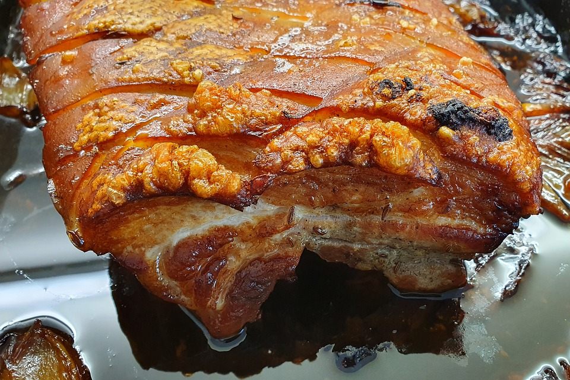

Crispy Pork Belly

Description
Few things are better than this succulent pork under its crust of salty crackling.
The recipe is simple but the main thing to remember is patience over the cooking time is rewarded with a glass-like crunch on the crackling.
Ingredients
- Pork Belly 1.2kg
- Red Wine Vinegar 2 tbsp
- Onions x2
- Salt 2 tsp
- Garlic 2 cloves
- Rosemary fresh 2 sprigs leaves only
Method
- Boil the kettle and as soon as it is ready pour the water over the skin of the crackling after placing it on a wire rack over your baking tray.
- Pat the pork dry and tip away the water from the tin. Drizzle the vinegar over the skin and place pork in the fridge to dry out for at least 2 hours.
- Remove pork from fridge to come up to room temp for 30 mins before cooking. Mash salt garlic and chopped rosemary to a paste and spread over the skin.
- Quarter the onions and place in base of tray with 2 tbsp water. Place wire rack over the tray and the pork on the rack skin side up.
- Preheat oven to 220c and roast for 30 min before reducing to 150c for 1hr 30 min. Take a look to check crackling is fully crisp and don't be afraid to leave in up to 30 mins more.
Return to Recipe Hub